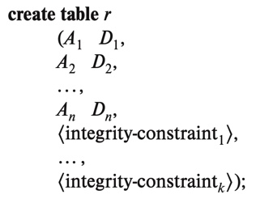
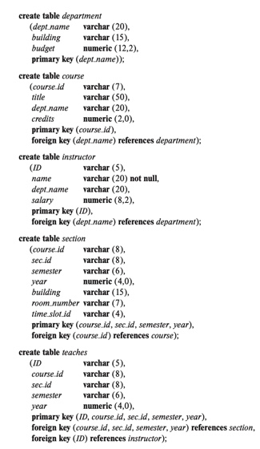

3 Introduction to SQL
3.1 Overview of the original version of SQL
IBM originally developed SQL, then called Sequel, in 1970s
in 1986 - American National Standards Institute (ANSI) & International Organization for Standarization (ISO) published an SQL standard called SQL-86
- followed by SQL-89, SQL-92, SQL:1999, SQL:2003, SQL:2006, SQL:2008, SQL:2011, & most recently SQL:2016
\[\\[.1cm]\]
- SQL has several parts:
- DDL - commands for defining, deleting, & modifying relation schemas
- DML - provides ability to query info. from database, & to insert, delete, & modify tuples
- Integrity - commands for specfying integrity constraints that the data must satisfy
- View definitions - SQL DDL has commands fro defining views
- Transactions - commands for specfying beginning & end of transactions
- Embedded SQL & dynamics SQL - defines how SQL can be embedded w/general programming languages
- Authorizations - SQL DDL includes commands for specifying access rights to views and relations
3.2 SQL Data Defintion
SQL buit-in types:
char(n) - n length character string
varchar(n) - n maximum length varying character string
int/integer - finite subset of integer
smallint - a small integer
numeric(p, d) - a fixed point number w/user-specified precision; p is the number of digits & d is the number of digits after the decimal point
Ex. numeric(3,1) can store 44.5 but NOT 444.5real, double - floating point & double precision floating numbers
float(n) - floating number w/at least n digits
nvarchar - stores multilingual data
When comparing a char type to a varchar type, spaces will be added DEPENDING on the database. Thus a comparision of A (char type) = A (varchar type) may return false, so ALWAYS use varchar.
\[\\[.1cm]\]
create table- command to create a relation- general form is

where r = name of table, Ai = attribute, & Di = domain of attribute, type of attribute, & constraints
Query Examples\[\\[.1cm]\]
drop table r - deletes all info. about table r and removes it from the database
delete from r - deletes all the rows in table r but does NOT delete it from the database
alter table r add A D - adds atribute A of type D to an existing table r & assigns it null values (the default)
alter table r drop A - drop attribute A from table r
- many database systems do NOT allow attributes to be dropped despite allowing tables to be dropped
3.3 Basic structure of SQL queries
Basic structure consists of 3 clauses SELECT, FROM, $ WHERE
SELECT allows duplicates in results
- use SELECT DISTINCT to remove duplicates
- use SELECT ALL to explicitly specify duplicates are NOT removed
- SELECT also allows arthmetic expressions w/+, -, *, & /
\[\\[.1cm]\]
- WHERE - specify the requirement/predicate involving attributes
- allows logical connectiveness AND, OR, & NOT
- operands can be expressions w/comparsion operators <, <=, >, >=, =, & <>
\[\\[.1cm]\]
- General meaning of a SQL query:
- generate a cartesian product of the tables listed in the FROM clause
- apply the predicates specified in the WHERE clause on the result of step 1
- for each row in the result of step 2, output the attributes specified in the SELECT clause
This is NOT how SQL queries are executed. A real implementation would only generate elements of the cartesion product that satisfy the where clause predicates.
3.4 Additional Basic Operations
asclause - used to rename the attributes of a resulting relation- can be used w/select & from clause
\[\\[.1cm]\]
correlation name- an identifier that is used to rename a relation- a.k.a table alias, correlation variable, tuple variable
\[\\[.1cm]\]
- String Operators:
- upper(s) - makes string ‘s’ all uppercase
- lower(s) - converts string ‘s’ to all lowercase
- trim(s) - removes the space at the end
- like - operator used for pattern matching \[\\[.1cm]\]
LIKE- used to express patternsthere are 2 special characters for describing patterns: % and _
% matches any substring
_ matches any character
patterns are case SENSITIVE
‘Intro%’ matches any string beginning w/“Intro”
‘%Comp%’ mathches any string containing “Comp” as a substring
’___’ mathces any string w/exactly 3 characters
’___%’ - matches any string of at least 3 characters
Ex. "Find all the names of all departments whose building names includes the substring 'Watons'. SELECT dept_name FROM department WHERE building LIKE '%Watson%'
\[\\[.1cm]\]
escapekeyword - used immediately before % and _ to indicate that it is to be treated like a normal characterEx. 1. LIKE 'ab\%cd%'escape'\' matches all strings beginning w/"ab%cd" 2. LIKE 'ab\\cd%'escape'\' matches all strings beginning w/"ab\cd"NOT LIKE- used to search for mismatches* (asterisk)- used w/select clause to mean all attributesORDER BY- causes the tuples in the result of a query to appear in a sorted orderdefault is in ascending order so use desc for descending order
can be used on multiple attributes
Ex. SELECT * FROM instructor ORDER BY salary desc, name asc;
\[\\[.1cm]\]
BETWEEN- a comparison operator to simplify the where clause that specify that value is less than or equal to a value and greater than or equal to some valueEx. Write this: SELECT name FROM instructor WHERE salary BETWEEN 90000 and 100000; Instead of this: SELECT name FROM instructor WHERE salary <= 100000 AND salary >= 90000;
\[\\[.1cm]\]
ROW CONSTRUCTOR- allows comparison operators to be used on tuples; (\(a\)1, \(a\)2) <= (\(b\)1, \(b\)2) is true if \(a\)1 <= \(b\)1 & \(a\)2 <= \(b\)2Ex. Write this: SELECT name, course_id FROM instructor, teaches WHERE (instructor.ID, dept_name) = (teaches.ID, 'Biology'); Instead of this: SELECT name, course_id FROM instructor, teaches WHERE instructor.ID = teaches.ID and dept_name = 'Biology';
3.5 Set Operations
union- automatically remove duplicates- use UNION ALL to retain all duplicates
\[\\[.1cm]\]
intersect- tuple in common btw 2 tables; automatically remove duplicatesuse INTERSECT ALL to retain all duplicates
note that INTERSECT ALL returns the minimum number of duplicates in the 2 tables
Ex. So if 4 sections of ICP 101 were taught in Fall 2017 and 2 sections taught in Spring 2018, then there would be 2 tuples with ICP 101 in the resulting table\[\\[.1cm]\]
except- outputs all tuples from the first table that is not in the second table; perfroms set difference- use EXCEPT ALL to retain duplicates
EXCEPT ALL returns the number of duplicates in table 1 minus the number of duplicates in table 2 if the difference is POSITIVE.
3.6 Null Values
NULL VALUES- presents problems for arithmetic operations, comparisons, and set operationsthe result of any arithmetic expressions (+, -, *, or /) is null if any of the input values is null
the result of any comparison w/null values is unknown
- boolean operators are extended to deal w/unknowns
- and:
- result of true and unknown is unknown
- false and unknown is false
- unknown and unknown is unknown
- or:
- true or unknown is true
- false or unknown is unknown
- unknown or unknown is unknown
- not:
- result of not unknown is unknown
\[\\[.1cm]\]
null- a special keyword that can be used in the where clause to test for null valuesEx. WHERE salary is null Alternatively, WHERE salary is not null -> will select not null values
\[\\[.1cm]\]
is unknown- another special keyword to test whether the result of a comparison is unknownEx. WHERE salary > 100000 is unknown Alternatively, WHERE salary > 100000 is not unknown
unknown & not unknown are not supported by several databases
3.7 Aggregate Functions
- aggregate functions take a collection of (a set or multiset) of values as input & returns a single value
- SQL offers 5 standard built-in functions
- avg -> average
- min -> minimum
- max -> maximum
- sum -> total
- count -> count
sum & avg must have numeric inputs, other functions can operate on nonnumeric datatypes
\[\\[.1cm]\]
GROUP BY- forms groups using specified attribute(s)Ex. SELECT dept_name, avg(salary) as avg_salary FROM instructors GROUP BY dept_name;
\[\\[.1cm]\]
HAVINGclause - applies conditions to each group rather than on a single rowEx. SELECT dept_name, avg(salary) as avg_salary FROM instructors GROUP BY dept_name HAVING avg(salary) > 42000;- sequence of operations for queries w/group by & having clauses:
- FROM is evaluated first
- if present, WHERE is applied on the resulting table of the from clause
- rows satisfying the WHERE clause are placed into groups in the GROUP BY clause
- if present, HAVING clause is applied to each group & groups that do not satisfy the HAVING clause are removed
- SELECT generates a single tuple for each group by applying the aggregate function
- sequence of operations for queries w/group by & having clauses:
all aggregate functions except count(*) ignore null in their inputs
the count of an empty set is 0, while the result of other functions is null
3.8 Nested Subqueries
subquery- a SELECT-FROM-WHERE expression that is nested within another querycorrelated subquery- a subquery that uses a correlation name from an outer query
3.9 Modification of the Databases
delete- used to remove whole tuples only- delete cannot remove attributes, must be the entire row
- written as: DELETE FROM r WHERE p;
- p is the predicate & r is the relation
- delete first finds all tuples, t in r for which p(t) is true and then deletes it from r
- WHERE can be omitted, in which all rows in r are deleted
delete can only operate on one relation
if all rows are deleted, the table still exists but is EMPTY
\[\\[.1cm]\]
INSERT- allows us to add a single tuple or a set of tuples into a relation- tuples inserted must have the correct num. of attributes
UPDATE- can change a value in a tuple w/o changing all valuesCASE- allows us to perform multiple updates in a single UPDATE statement, thereby avoiding the problem w/the order of tuplesEx. general form: UPDATE table SET attribute = CASE WHEN pred1 then result1 WHEN pred2 then result2 ... WHEN predN then resultN else result0 end